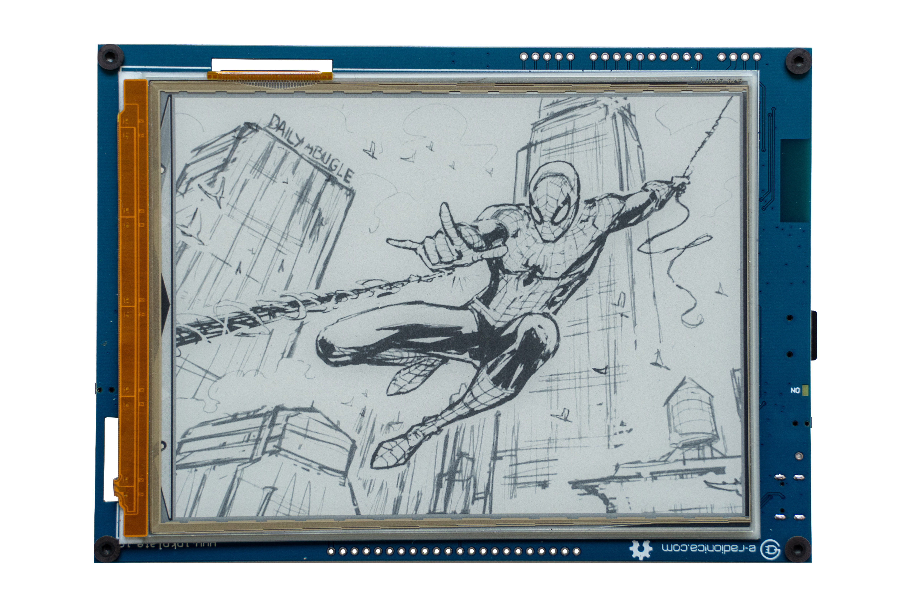
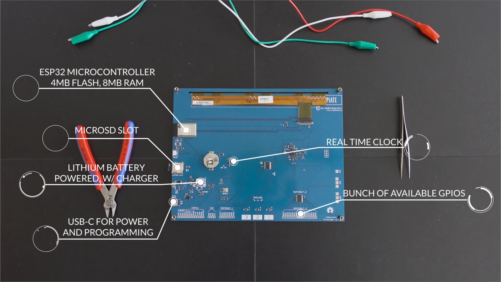
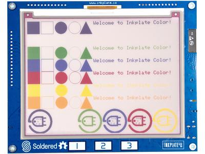

2. Inkplate Features
2.1. Inkplate Comparison
feature |
Inkplate 10 |
Inkplate 6 |
Inkplate 6PLUS |
Inkplate 6COLOR |
Inkplate 2 |
Screen size |
9.7” |
6” |
6” |
5.8” |
2.13” |
Resolution |
1200x825 |
800x600 |
758x1024 |
600x448 |
202x104 |
Pixels |
990,000 |
480,000 |
776,192 |
268,800 |
21,008 |
All-in-one |
Yes |
Yes |
Yes |
Yes |
Yes |
Low-power |
Yes |
Yes |
Yes |
Yes |
Yes |
Wi-Fi |
Yes |
Yes |
Yes |
Yes |
Yes |
Touchpads |
Yes |
Yes |
No |
Yes |
No |
Touchscreen |
No |
No |
Yes |
No |
No |
MicroSD |
Yes |
Yes |
Yes |
Yes |
No |
Grayscale |
Yes |
Yes |
Yes |
No |
No |
Partial update |
Yes |
Yes |
Yes |
No |
No |
Refresh time |
1.61s |
1.26s |
1.27s |
12s |
21.8s |
Refresh per px |
1.62μs |
2.63μs |
1.63μs |
45μs |
1ms |
2.2. Inkplate 6
2.2.1. Front-Mounted Components:

2.2.2. Rear-Mounted Components:

2.2.3. Other Technical Specifications
Physical Interface: three capacitive touch pads, hardware power switch, one LED battery indicator and hardware reset buttonConnectors: Micro USB, easyC, and GPIOWired Connectivity: USB, I²C, and SPIUSB to UART converter: CH340CStorage: MicroSD card readerPower Management: based on Texas Instruments (TI) TPS65186, MCP73831 lithium battery charger with a standard JST connectorTemperature Sensor: Internal TPS65186
2.3. Inkplate 6PLUS
2.3.1. Front-Mounted Components:
{kind=link}
2.3.2. Rear-Mounted Components:

2.3.3. Other Technical Specifications
Physical Interface: touchscreen, backlight, hardware power switch, one LED battery indicator and hardware reset button.Connectors: Micro USB, easyC, and GPIO.Wired Connectivity: USB, I²C, and SPI.USB to UART converter: CH340C.Storage: MicroSD card reader.Power Management: based on Texas Instruments (TI) TPS65186, MCP73831 lithium battery charger with a standard JST connector.Temperature Sensor: Internal TPS65186.
2.4. Inkplate 10
2.4.1. Front-Mounted Components:

2.4.2. Rear-Mounted Components:
{kind=link}
2.4.3. Other Technical Specifications
Physical Interface: three capacitive touch pads, push button for power and additional user button, form factor that is optimized for custom enclosures.Connectivity: a USB Type-C port for programming and power, plenty of additional GPIO pins and support for I²C, SPI, and easyC/Qwiic connectivity.Integrated Wi-Fi and Bluetooth 4.0 (BLE) support thanks to the on-board ESP32 module.USB to UART converter: CH340CStorage: MicroSD card readerPower Management: based on Texas Instruments (TI) TPS65186, MCP73831 lithium battery charger with a standard JST connectorTemperature Sensor: Internal TPS65186
2.5. Inkplate 6COLOR
2.5.1. Front-Mounted Components:
{kind=link}
2.5.2. Rear-Mounted Components:

2.5.3. Other Technical Specifications
Physical Interface: three capacitive touch pads, push button for power and additional user button, form factor that is optimized for custom enclosures.Connectors: USB type C, easyC, GPIO and battery.Wired Connectivity: USB, I²C, and SPI.USB to UART converter: CH340C.Storage: MicroSD card reader.Power Management: onboard SPD1656 Chip on Glass (also used as Active Matrix EPD Display Driver) for power supply, MCP73831 lithium battery charger with a standard JST connector.
2.6. Inkplate 2
2.6.1. Front-Mounted Components:

2.6.2. Rear-Mounted Components:

2.6.3. Other Technical Specifications
Physical Interface:GPIO pins, reset button and form factor that is optimized for custom enclosures.Connectors: USB type C, easyC, GPIO and battery.Wired Connectivity: USB, I²C, and SPI.USB to UART converter: CH340C.Storage: 4MB internal flash memory for user data.Power Management: onboard Chip on Glass (also used as Active Matrix EPD Display Driver) for power supply, MCP73831 lithium battery charger and pads on board to solder battery.